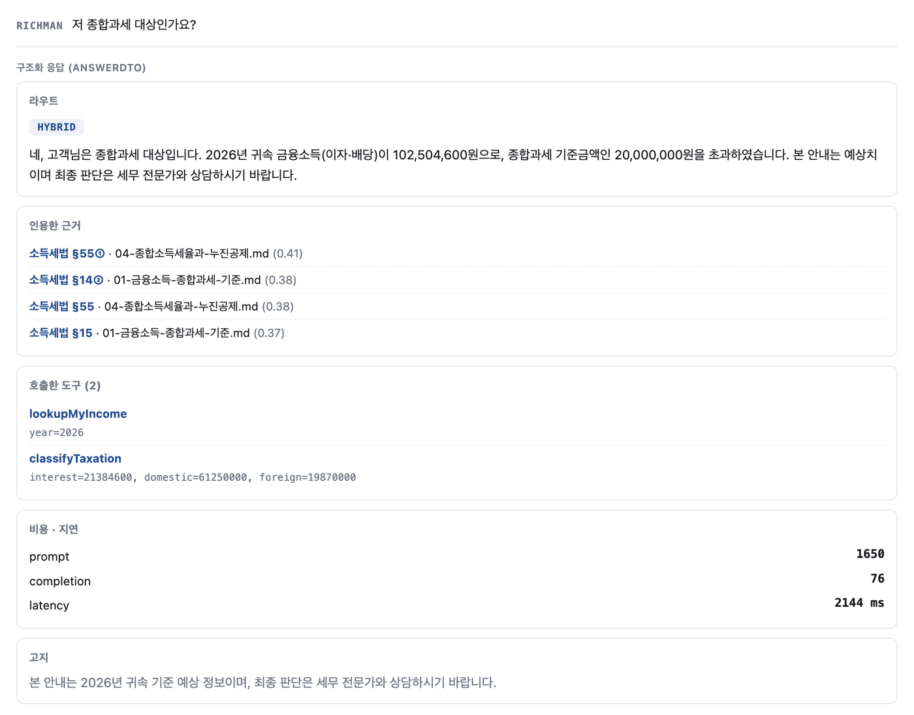
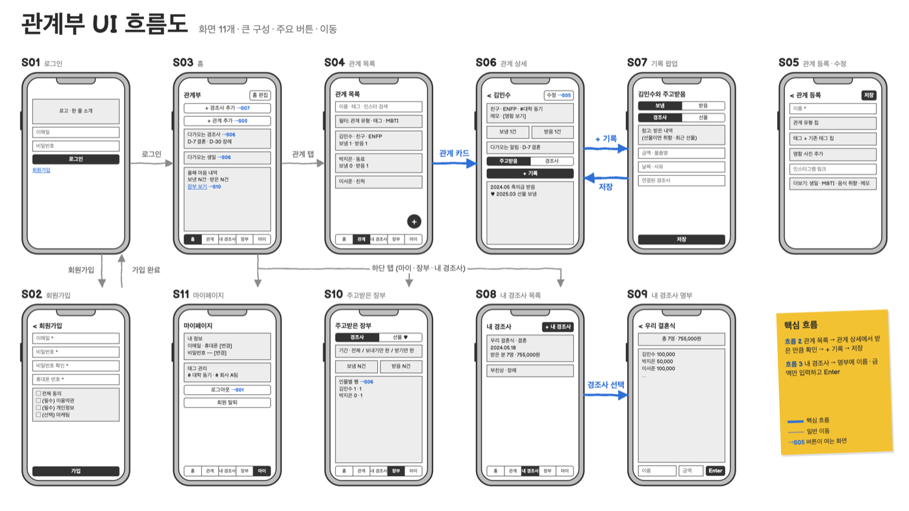
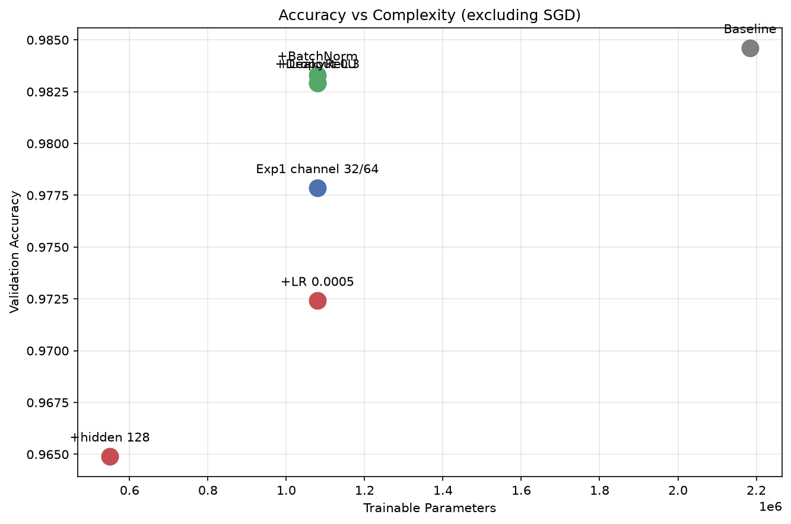
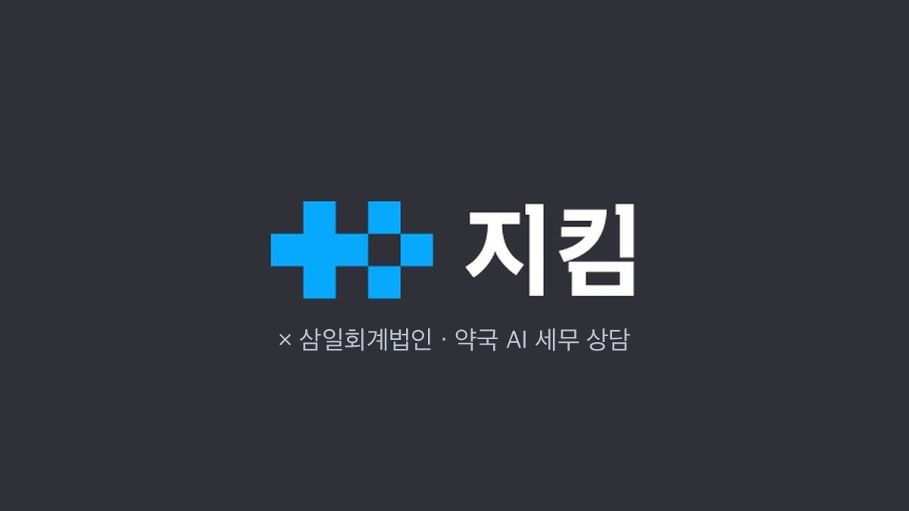

ProfileProduct Manager · IT Planning · AX
Inwoo Jang
I'm a Product Manager who learns the work firsthand, then writes down the features and edge cases it needs. At my company I did product planning and operations; now, in an AI service development bootcamp, I'm also building things myself.
- JEEKIM COMPANY, product planning and operations, 2024.10 – 2026.06
- Currently in an AI service development bootcamp
- English · Chinese (business level)
Verified evidence
- 30 clientsDid their bookkeeping myself to define payroll rulesJEEKIM COMPANY · payslip planning
- About 1 hour → 10 minutesStaff time on manual order entry (per day)Order sync · my own records
- PM of a 7-person teamLaunched on the App Store and Google PlayQuiket · team result
- 24th of 320 teamsDACON dashcam competitionTeam result · I ran the Stage 1 experiments
Experience and work
All projects- 2026.07 – present
AI service development bootcamp (SK Group SKALA, cohort 4)
Full-stack basics, data analysis, cloud, generative AI and project methodology. Team projects started in November. During this period I build things myself in assignments and personal projects.

TaxDesk — tax consultation on financial incomeDesigned solo · built and verified with AI coding tools
Gwangyebu — feature, screen, ERD and API designDesigned solo · frontend
Making a traffic sign recognition model lighterPair assignment · compression approach and experiments
- 2024.10 – 2026.06
JEEKIM COMPANY · Product team, product planning and operations
Tax, payroll and prescription storage services for pharmacies. As the only planner on a 5-person team, I defined screens, data, rules and edge cases, checked what was built against the plan with the dev team, and ran the newly opened prescription scan center. Joined as an intern in 2024.10 and became full-time in 2025.01.
 Payslip service planningCalculation rules and policy · internal use
Payslip service planningCalculation rules and policy · internal use Order and box status sync with a pharmaceutical wholesaler’s ordering platformPlanning and verification · went live
Order and box status sync with a pharmaceutical wholesaler’s ordering platformPlanning and verification · went live
AI tax consultation for pharmaciesService rules and screens · in beta
- 2026.03 – 07
DDD side project · Quiket PM
In a side-project club for people working in IT, I was PM of a 7-person team (4 developers, 2 designers). We launched on the App Store and Google Play (team result).
 Quiket — an AI quiz study appPM and product planning · production app built by the dev team
Quiket — an AI quiz study appPM and product planning · production app built by the dev team
- 2021.12 – 2024.06
J.Mermaid · solo online store founder
I ran sourcing, product photos, product pages, ads, customer service and logistics on my own, and negotiated directly with Chinese wholesalers in Chinese.
- 2016 – 2020
Fudan University, Law
I studied in Shanghai, China. I later used the Chinese I learned there in my own business.
I have not worked in a developer role. I build software in the bootcamp and in personal projects.
Skills — and where I used them
| Area | Skills | Where I used them |
|---|---|---|
| Product Planning | PRD · IA · user flow · functional spec · Figma | Product planning at JEEKIM COMPANY, Quiket |
| AI | Spring AI (RAG · the server calls functions defined with @Tool in a set order), LLM APIs, LangChain agent tool restrictions and user approval (team exercise) | TaxDesk, Quiket mini version, Dev Notes |
| Backend | Java · Spring Boot · JPA | TaxDesk, ClassTrack |
| Data | SQL · PostgreSQL · Python | MarketDesk, Labeling tool, Hackathon demo |
| Frontend | Vue 3 · React · TypeScript · Next.js | EDU:UP, Gwangyebu design, ArchiveLink, MarketDesk |
| Collaboration | Notion · Figma · Git/GitHub | Tracking tasks and decisions, screen design, code management |
Languages and certifications
| English | Business — OPIc IH (2026.06). At university I took courses taught in English and led and presented a project for a four-person team of international students. |
|---|---|
| Chinese | Business — 6 years of study in China (high school and university). I negotiated directly with Chinese wholesalers in Chinese and have worked as an accompanying interpreter. |
| Certifications | ADsP (Advanced Data Analytics Semi-Professional) · Certified Accounting Manager · Computerized Tax Accounting, Level 2 · MOS Excel Expert |
Working with me
Careful with the details, flexible when results aren't what we expected, and easygoing the rest of the time.
People call me “the warm robot.” I think and work logically, but I also pay attention to what the people around me are going through.
Open to new opportunities
If you have a Product Manager, IT planning or AX role, get in touch and I'll reply quickly.